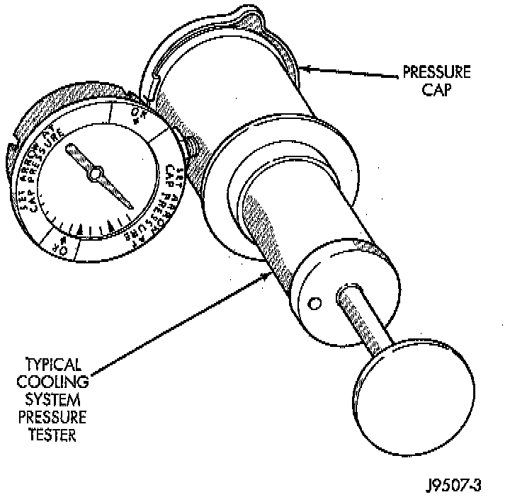

Radiator Cap - Pressure Testing

1. Remove cap from radiator. Be sure that sealing surfaces are clean.
2. Moisten rubber gasket with water and install cap on pressure tester 7700 or an equivalent.
3. Operate tester pump and observe the gauge pointer at its highest point. The cap release pressure should be 97 - 124 kPa (14 - 18 psi). The cap is satisfactory when the pressure holds steady. It is also good if it holds pressure within the 97 - 124 kPa (14 - 18 psi) range for 30 seconds or more. If the pointer drops quickly, replace the cap.
NOTE: The pressure cap may test properly while positioned on tool 7700 or equivalent. It may not hold pressure or vacuum when installed on radiator. If so, inspect radiator filler neck and cap's top gasket for damage. Also inspect for dirt or distortion that may prevent cap from sealing properly.
CAUTION: Radiator pressure testing tools are very sensitive to small air leaks, which will not cause cooling system problems. A pressure cap that does not have a history of coolant loss should not be replaced just because it leaks slowly when tested with this tool. Add water to tool. Turn tool upside down and recheck pressure cap to confirm that cap needs replacement.